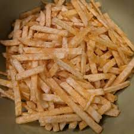
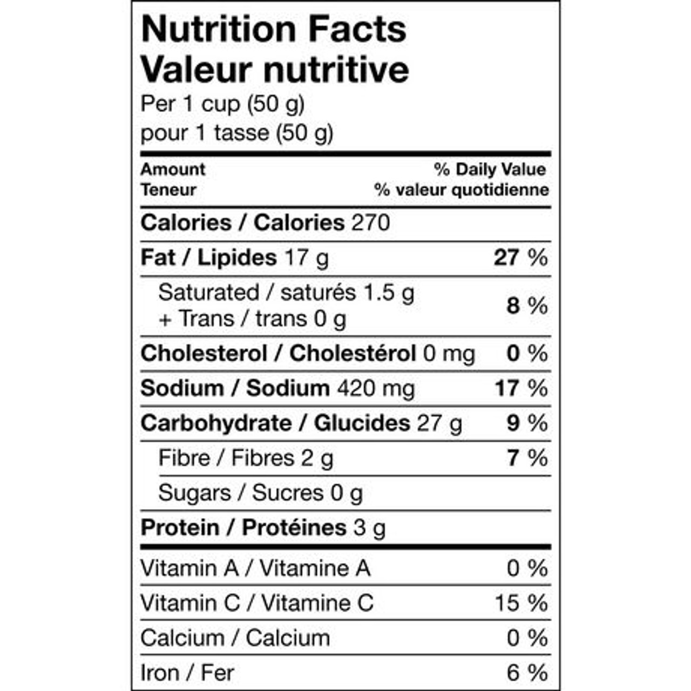
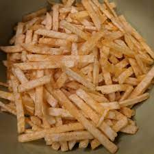
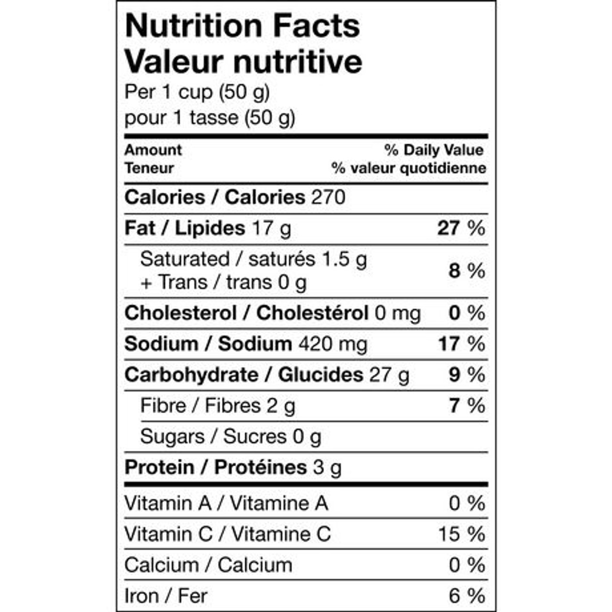
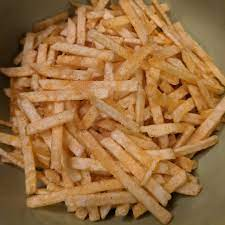
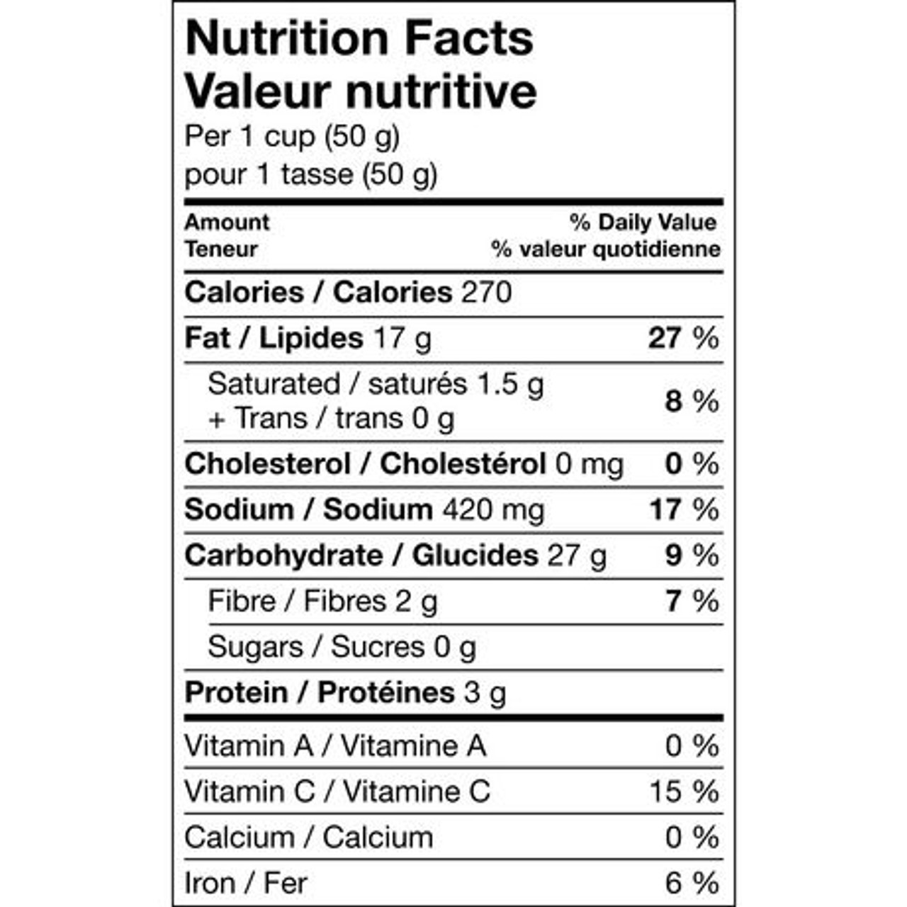
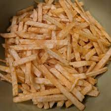
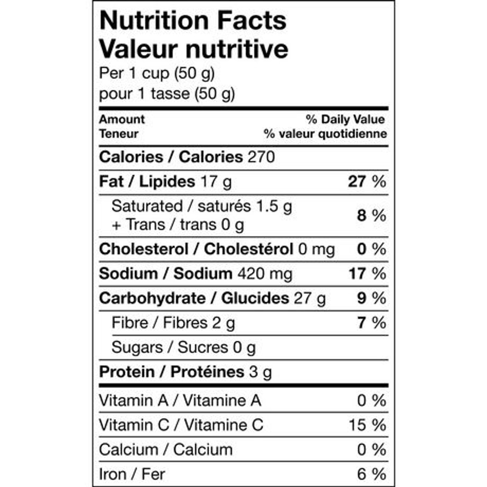

Hickory Sticks are skinny, hickory-smoke flavored potato chips. Hostess used to be the #1 potato chip brand in Canada but eventually lost their position due to brand erosion in the 90s. Today the Hickory Stick is the only Hostess product still in production.
Specially selected potatoes, hydrogenated vegetable oil, seasoning (torula yeast, monosodium glutamate, spices, natural and artificial flavour, MA, colour [contains tartrazine]), salt.